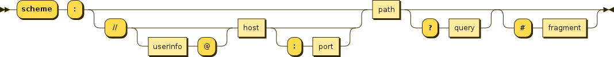
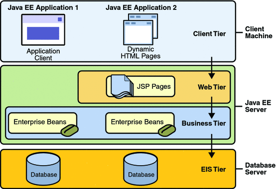

Introducció a la programació web
Objectius
- Seleccionar les arquitectures i tecnologies de programació web en entorn servidor, analitzant-ne les capacitats i característiques pròpies.
- Introduir els principals llenguatges i frameworks per al desenvolupament en l'entorn servidor.
- Caracteritzar i diferenciar els models d'execució de codi en el servidor i en el client web.
- Identificar les principals tecnologies associades.
- Instal·lar i configurar l'entorn de treball que emprarem per al desenvolupament web.
- Visualitzar mitjançant el navegador una pàgina web html amb codi PHP encastat.
Arquitectura d'una aplicació web
A diferència de les aplicacions d'escriptori, que utilitzen els recursos d'un únic ordinador les aplicacions web són distribuïdes, intervenen com a mínin dos equipos diferents: el client i el servidor.
La comunicació és du a terme mitjançant un protocol, en el nostre cas el protocol HTTP, base de la WWW.
Elements: navegador, servidor, protocol HTTP i HTML
El protocol de transferència d'hipertext (HTTP) és un protocol client-servidor molt senzill que articula els intercanvis d'informació entre els clients web (navegadors) i els servidors HTTP.
HTTP es basa en operacions senzilles de sol·licitud/resposta. Quan un client estableix una connexió amb un servidor i envia un missatge amb les dades de la sol·licitud, el servidor respon amb un missatge similar que conté l'estat de l'operació i el seu resultat de la sol·licitud. Totes les operacions poden adjuntar un objecte o recurs sobre el qual actuen; cada objecte web (document HTML, arxiu multimèdia o aplicació CGI) és conegut pel seu localitzador uniforme de recursos (URL, Uniform Resource Locator). Els recursos poden ser arxius, el resultat de l'execució d'un programa, una consulta a una base de dades, la traducció automàtica d'un document, etc.
HTTP és un protocol sense estat, és a dir, no guarda cap informació sobre connexions anteriors. El desenvolupament d'aplicacions web freqüentment necessita mantenir estat. Per això s'utilitzen les galetes (cookies), és a dir, la informació que un servidor pot emmagatzemar en el sistema client. Això permet que les aplicacions web institueixin la noció de "sessió", i, alhora, permet rastrejar usuaris, ja que les galetes es poden emmagatzemar en el client durant un temps indeterminat.
Amb la intenció de conèixer amb més profunditat el protocol HTTP podem avaluar en què consisteix una transacció HTTP.
Cada vegada que un client fa una petició a un servidor, s'executen un seguit d'accions:
- Un usuari accedeix a una adreça d'Internet (URL) seleccionant un enllaç d'un document HTML o introduint-la directament a la barra de navegació d'un navegador web des de la perspectiva del client web. El client web descodifica l'adreça d'Internet (URL) separant-ne les diferents parts. És així com s'identifiquen el protocol d'accés, el node expressat amb el nom de domini o la seua adreça IP, el possible port opcional (el valor per defecte és el 80) i l'objecte del servidor requerit.
- S'obre una connexió TCP/IP amb el servidor cridant el port TCP corresponent. Es fa la petició. En conseqüència, s'envien l'ordre necessària (GET, POST, HEAD, etc.), l'adreça de l'objecte requerit (el contingut de l'adreça d'Internet del servidor), la versió del protocol HTTP utilitzada (en la major part de les ocasions és HTTP/1.0) i un conjunt variable d'informació que inclou dades sobre les capacitats del navegador web, dades opcionals per al servidor, etc.
- El servidor localitza el recurs sol·licitat i torna la resposta al client.
- Aquesta resposta consisteix en un codi d'estat i el tipus de dada amb extensions multipropòsit de correu d'Internet (MIME, Multipurpose Internet Mail Extension) de la informació de tornada, seguit de la mateixa informació.
- El client formata i mostra el recurs rebut.
- Es tanca la connexió TCP.
Aquest procés es repeteix en cada accés que es faça al servidor HTTP. Per exemple, si es recull un document HTML que conté quatre imatges, el procés de transició mostrat amb anterioritat es repeteix cinc vegades, és a dir, una pel document HTML i quatre per les imatges.

Si el recurs sol·licitat és un programa (CGI, ASP.NET, PHP, etc.) el servidor HTTP redirigirà la petició a la llibreria o intèrpret adequat que executarà el programa i tornarà el control al servidor web.
Format de les URL
La sintaxi general de les URL consisteix en una seqüència jeràrquica de 5 components:
URI = scheme:[//authority]path[?query][#fragment]
on el component authoriry es deivideix en tres subcomponents:
authority = [userinfo@]host[:port]

El model client/servidor
El model client-servidor és aquell on tots els clients estan connectats a un servidor on es centralitzen els diferents recursos. Aquests recursos estan a disposició dels clients cada cop que els sol·liciten. Això fa que totes les gestions que es realitzen es concentren en el servidor, que disposa dels requeriments dels clients amb prioritat, els arxius que són d'ús públic i els restringits, els arxius de només lectura, els que poden ser modificats, etc.
En el model client/servidor, el dispositiu que sol·licita informació es denomina client i el dispositiu que respon la sol·licitud es denomina servidor. Els processos de client i servidor es consideren una part de la capa d'aplicació. El client comença l'intercanvi sol·licitant les dades al servidor, que respon enviant un o més blocs de dades al client. Els protocols de capa d'aplicació descriuen el format de les sol·licituds i respostes entre clients i servidor. A més de la transferència real de dades, aquest intercanvi pot requerir informació addicional, com l'autentificació de l'usuari i la identificació d'un arxiu de dades per transferir.
Encara que les dades generalment es descriuen com un flux del servidor al client, algunes dades sempre flueixen del client al servidor. El flux de dades pot ser el mateix en les dues direccions o fins i tot ser major en la direcció que va del client al servidor. Per exemple, un client pot transferir un arxiu al servidor amb finalitats d'emmagatzemament. La transferència de dades d'un client a un servidor es coneix com a pujada i la de les dades d'un servidor a un client, baixada.
Pàgines web estàtiques i dinàmiques
Pàgines web estàtiques
Les pàgines web estàtiques són aquelles on el seu contingut no varia per la qual cosa mostraran la mateixa informació cada vegada que es carreguen. Són les pàgines creades en el llenguatge HTML.
Només canvien si el programador web les modifica.
Pàgines web dinàmiques
Les pàgines web dinàmiques són pàgines el contingut de les quals varia a partir d'informació continguda en una BBDD.
El contingut mostrat pot canviar segons l'usuari connectat, el navegador que s'utiltze o accions anteriors dels usuaris, etc.
Aquest tipus de pàgines s'han de realitzar mitjançat un llenguatge de programació.
Execució de codi en el client i en el servidor
En el següent gràfic es mostra un escenari on podem trobar codi que s'executa en el servidor (PHP) i en el client (javascript).
 # 2. Tecnologies per a programació web del costat del servidor
# 2. Tecnologies per a programació web del costat del servidor
Model de desenvolupament en 3 capes.
Des d'un punt de vista de desenvolupament una aproximació més detallada al model client-servidor és el que es coneix com a model en 3 capes. És un model on es mostra més en detall com es distribueix el programari que participa en qualsevol desenvolupament web. Segueix estant present l'arquitectura client-servidor (tot es basa en ella) però apareixen més detalls com el programari utilitzat en cada un dels dos actors i com interactuen les diferents tecnologies o aplicacions.
Per comprendre millor que és el model de desenvolupament de 3 capes podem tirar un ull al següent esquema on es mostra cadascuna d'aquestes capes i que s'encarrega cadascuna d'elles:

- Capa de presentació: És la capa on l'aplicació es mostra a l'usuari. Bàsicament és la GUI (Graphical User Interface, interfície gràfica d'usuari). En el cas d'una aplicació web seria el codi HTML que es carrega directament al navegador web. En qualsevol cas, s'executa directament en l'equip del client.
- Capa de negoci: És la capa intermèdia on es porta a terme tota la lògica de l'aplicació. Sempre s'executarà en el costat servidor. Aquesta capa, després de realitzar tots els càlculs i / o operacions sobre les dades, genera el codi HTML que serà presentat a l'usuari en la capa següent.
- Capa de dades: És la capa que emmagatzema les dades. Bàsicament, en condicions normals, fa referència al propi SGBD que és l'encarregat d'emmagatzemar les dades. Depenent de l'arquitectura de l'aplicació, aquesta capa i la de negoci es poden trobar físicament en el mateix equip, encara que també és possible que s'hagin de separar per qüestions de rendiment. La capa de dades serveix totes la informació necessària a la capa de negoci per dur a terme les seves operacions.
Si ens imaginem una botiga online, la capa de dades emmagatzema tota la informació en una base de dades (usuaris, comandes, articles, ofertes,...), La capa de negoci ha d'accedir a aquesta informació i, després processar una comanda, per exemple, ha de presentar el resultat final a l'usuari en el navegador, que és la capa de presentació.
I si ens centrem en un cas concret amb programari i tecnologies ja definits, un model de 3 capes podria ser el següent:
")
- Navegador web: En aquest cas, Mozilla Firefox, Internet Explorer o Google Chrome podrien ser qualsevol de les aplicacions que ocuparien aquesta capa
- Apache + PHP / IIS + ASP: Un servidor web acompanyat del seu corresponent llenguatge de programació web permeten desenvolupar la part que ocupa la capa de negoci. També podríem col·locar la combinació Apache Tomcat + Servlets
- MySQL / PostgreSQL: Finalment a la capa de dades podem posar qualsevol SGBD, com poden ser MySQL o PostgreSQL.
L'avantatge principal d'aquest model és que el desenvolupament es pot dur a terme en diversos nivells i, en cas que sobrevinga algun canvi, només afectarà el nivell requerit sense haver de revisar entre el codi font d'altres mòduls, atès que s'haurà reduït el acoblament informàtic fins a una interfície de pas de missatges. :::
Front-end, Back-end, Full stack
També tenint en compte en quin costat se situen les tecnologies i per a què s'utilitzen aquestes, actualment es parla molt de 3 perfils diferenciats en l'àmbit del desenvolupament web:
- Front-end: És la part del desenvolupament que s'encarrega del disseny i maquetació de l'aplicació web utilitzant tecnologies com HTML, CSS i Javascript (i els seus frameworks). En aquest cas s'ha de preocupar també de la correcta presentació en qualsevol tipus de dispositiu i fins i tot del posicionament en cercadors
- Back-end: És la part del desenvolupament que s'encarrega del costat servidor utilitzant tecnologies com PHP, JSP i Python. També s'encarrega de l'administració del servidor d'aplicacions i la base de dades.
- Full stack: En un perfil que engloba els dos anteriors. En aquest cas el desenvolupador potser no és un expert de cap tecnologia concreta però té amplis coneixements de tot el conjunt i és capaç de col·laborar en qualsevol de les parts.

Servidors web i servidors d'aplicacions
Així com les aplicacions d'escriptori s'executen directament sobre el sistema operatiu, les aplicacions web necessiten d'una eina addicional que permeti desplegar-les per a la seva posada en marxa. Parlem de servidors web i servidors d'aplicacions, respectivament.
Què és un servidor web?
Un servidor web és una aplicació que rep una petició HTTP (normalment a través d'un navegador web) i retorna la pàgina web sol·licitada (escrita en llenguatge HTML i podent contenir codi Javascript encastat) perquè aquesta sigua interpretada i visualitzada pel navegador de qui va realitzar la sol·licitud (l'usuari).
Què és un servidor d'aplicacions?
Un servidor d'aplicacions és un servidor que permet l'execució d'aplicacions web.
Exemples
Apache
Apache és un dels servidors web més coneguts. És programari lliure i multiplataforma, encara que aproximadament el 90% dels servidors Apache s'executen actualment en entorns Linux ja que és el servidor preferit per a aquesta plataforma.
És molt modular el que permet incorporar característiques un cop instal·lat i posat en marxa. Això li fa també molt flexible i pot donar servei a webs escrites en els llenguatges de programació web més estesos (com PHP, Python, ASP,...) A través del mòdul corresponent.
Apache Tomcat
Apache Tomcat és un servidor d'aplicacions que funciona com a contenidor de Servlets de Java. Actualment és capaç d'implementar diverses especificacions de Java EE com Servlets i JSP (Java Server Pages) i més proporciona un servidor web pur perquè es faça servir en combinació amb l'entorn Java.
WSGI (Web Server Gateway Interface)
WSGI és una interfície que defineix com es comunica un servidor web amb aplicacions web o frameworks escrits en Python.
Llenguatges
PHP
PHP (PHP Hypertext Preprocessor) és un llenguatge de programació de costat servidor dissenyat principalment per al desenvolupament web.
PHP s'utilitza com a llenguatge de script embegut en pàgines HTML i funciona, normalment, com un mòdul del servidor web (per exemple, a Apache). El servidor web combina els resultats d'executar els scripts PHP amb l'HTML al qual va encastat i genera la pàgina web resultant per al navegador.
Actualment PHP funciona pràcticament amb qualsevol servidor web i en qualsevol Sistema Operatiu existents, i gairebé amb qualsevol SGBD en cas que necessitem utilitzar una base de dades. Tot i això, el més habitual és veure-ho formant el que es coneix com una arquitectura LAMP (Linux, Apache, MySQL i PHP), és a dir, funcionant sobre un sistema operatiu Linux, executant-com un mòdul del servidor web Apache i utilitzant a MySQL com SGBD per emmagatzemar la informació en cas que es requereixi una base de dades.

El llenguatge PHP va ser dissenyat per Rasmus Lerdorf i ara es manté per una comunitat de desenvolupadors, a més és de codi obert.
A continuació, un fragment d'una pàgina web dinàmica escrita amb PHP on es pot apreciar com s'incrusta el codi juntament amb l'HTML de la pàgina:
JSP / Servlets
JavaServer Pages (també conegut com JSP) és una tecnologia creada per a la creació de pàgines web dinàmiques del costat servidor. Igual que PHP, el seu codi s'escriu encastat juntament amb l'HTML de la pàgina web i és el servidor d'aplicacions, en aquest cas, qui ha de processar-per generar la pàgina web resultant, en HTML.
D'altra banda, Java Servlets és una tecnologia que també es pot utilitzar per crear contingut web dinàmic però que a més estén la seva funcionalitat a la possibilitat de connectar aquestes webs dinàmiques amb un altre contingut accessible a través d'Internet. De vegades s'utilitza juntament amb JSP per crear aplicacions web més complexes.
Totes dues són tecnologies desenvolupades per Sun Microsystems i propietat ara d'Oracle, després d'adquirir aquesta última a la primera fa ja alguns anys.

Python
El llenguatge Python va ser dissenyat per Guido van Rossum i ara es manté gràcies a una comunitat de desenvolupadors, i és codi obert.

Exemple de codi escrit amb Python. En aquest cas utilitzant el framework Django per al desenvolupament d'aplicacions web:
<h1>Mis películas</h1> <a href="#">+</a>
{% if lista_peliculas %}
<ul>
{% for pelicula in lista_peliculas %}
<li><a href="{% url 'pelicula' pelicula.id %}">{{ pelicula.titulo }}</a></li>
{% endfor %}
</ul>
{% else %}
<p>No hay películas disponibles</p>
{% endif %}
Separada del controlador:
from django.shortcuts import render
. . .
def index(request):
lista_peliculas = Pelicula.objects.all()
context = {'lista_peliculas': lista_peliculas}
return render(request, 'mispeliculas/index.html', context)
ASP.NET
ASP.NET és una tecnologia, creada per Microsoft, per al desenvolupament de lloc web dinàmics, aplicacions i serveis web. És la tecnologia successora del que abans es coneixia com ASP, l'antiga tecnologia de Microsoft per a la creació de pàgines web dinàmiques.
Com que funciona sobre la plataforma .NET de Microsoft, permet que es pugui desenvolupar en qualsevol dels llenguatges de programació d'aquesta plataforma, Visual Basic .NET o C#.
El més habitual és veure-ho funcionar juntament amb el lloc web de Microsoft, IIS (Internet Information Server).

A continuació, un exemple de pàgina web dinàmica amb ASP.NET (desenvolupada en llenguatge C #) programant l'acció que passa en prémer un botó (apareix el text d'un formulari a la part final del web):
protected void Button1_Click(object sender, EventArgs e)
{
string buf = TextBox1.Text;
changed_text.InnerHtml = buf.ToUpper();
}
<%@ Page Language="C#" AutoEventWireup="true" CodeBehind="Default.aspx.cs"
Inherits="firstexample._Default" %>
<!DOCTYPE html PUBLIC "-//W3C//DTD XHTML 1.0 Transitional//EN"
"http://www.w3.org/TR/xhtml1/DTD/xhtml1-transitional.dtd">
<html xmlns="http://www.w3.org/1999/xhtml" >
<head runat="server">
<title>
Untitled Page
</title>
</head>
<body>
<form id="form1" runat="server">
<div>
<asp:TextBox ID="TextBox1" runat="server" style="width:224px">
</asp:TextBox>
<asp:Button ID="Button1" runat="server" Text="Enter..."
style="width:85px" onclick="Button1_Click" />
<hr />
<h3> Results: </h3>
<span runat="server" id="changed_text" />
</div>
</form>
</body>
</html>
Preparant l'entorn de desenvolupament
Per a poder provar els nostres llocs web necessitarem instal·lar una sèrie d'eines com són: el servidor web Apache, el mòdul PHP per a aquest servidor, el SGBD MySql, un front-end per al SGBD (PHPMyAdmin), etc.
Per simplificar les coses optarem per instal·lar-ho mitjançant XAMPP, un paquet de programari lliure que conté el servidor HTTP Apache, la base de dades de MySQL i eines necessàries per utilitzar el PHP i el llenguatge de programació Perl.
Pràctica 1: Instal·lació de XAMPP
- Descarreguem el paquet XAMPP per a la nostra màquina (https://www.apachefriends.org/).
- Li donem permisos d'execució a l'arxiu descarregat:
sudo chmod +x xampp-linux-x64-7.3.9-0-installer.run - Executem l'assistent d'instal·lació
sudo ./xampp-linux-x64-7.3.9-0-installer.run - En l'assistent d'instal·lació, deixarem les opcions per defecte (excepte la qual ens parla de bitnami que la desmarcarem).
- Una vegada finalitzada la instal·lació, el nostre XAMPP es trobarà
en el directori
/opt/lampp - Ara ja podem arrancar els serveis amb el següent comando:
sudo /opt/lampp/lampp start - Quan els arranquem, si obrim el navegador i ens anem a la url http://localhost, ens hauria d'aparèixer la pàgina de benvinguda de XAMPP.
- Per a parar els serveis podem fer açò:
sudo /opt/lampp/xampp stop - En qualsevol cas, és molt més còmode treballar amb el panell de
control de XAMPP que podrem executar amb la següent ordre:
sudo /opt/lampp/manager-linux-x64.run - Veurem que s'inicia l'aplicació que ens permet controlar els serveis de XAMPP.
![[*Panell de control de
XAMPP*]{.title}](../assets/Captura_de_pantalla_a_2019-09-13_21-03-02.png "Panell de control de XAMPP")
Eines de desevolupament
Per a programar en llenguatges encastats com PHP, ASP o Phython és suficient amb un editor de text pla. No obstant sempre és recomanable treballar en un entorn integrat de desenvolupament o IDE (acrònim en anglès de Integrated development environment). Un IDE és una eina informàtica per al desenvolupament de programari de manera còmoda i ràpida. Així doncs és un entorn de desenvolupament que agrupa diferents funcions en un sol programa, habitualment: editor de codi, compilador, depurador i un programa de disseny d'interfície gràfica.
El principal avantatge és que facilita la tasca del programador mentre que l'inconvenient més important és que pot provocar mals hàbits a l'hora de programar o provocar errors que a priori començant de zero no es produirien.
Alguns dels IDE més emprats per al desenvolupament web són:
- Eclipse
- Netbeans
- Atom
- Sublime
- PHPStorm
- Brackets
Durant les activitats anteriors has preparat el teu propi entorn de desenvolupament sobre una màquina virtual (o una real) tal com s'ha explicat en les anotacions. Després, has de crear un projecte php utilitzant PHPStorm i visualitzar la pàgina principal a través del teu servidor XAMPP.
Al llarg del curs, crearem els nostres projectes utilitzant l'IDE PHPStorm.
Aquesta eina és de pagament, però podem utilitzar-la de forma gratuïta per a projectes OpenSource i amb finalitats educatives. En aqueixos casos caldrà sol·licitar la llicència corresponent al fabricant del programari. Una vegada obtinguda la llicència educativa pel professor, serà renovable anualment i podran utilitzar-la tots els alumnes del curs. És una eina molt completa que ens permetrà la integració amb moltes de les funcionalitats que emprarem.
Instal·lar PHPStorm
Per a instal·lar l'IDE PHPStorm seguirem els següents passos:
- Executarem sudo snap install phpstorm --classic
- Ens demanarà si volem importar dades d'una instal·lació anterior, al que contestarem, òbviament, que no.
- Ens demanarà que acceptem la política de privadesa.
- En executar l'aplicació per primera vegada ens demanarà les dades de llicència. Cada alumne s'haurà de registrar utilitzant l'enllaç que us passarà el professor en classe. en prémer l'enllaç ens redirigirà a la pàgina web de jetbrains perquè ens registrem. Una vegada registrats, podrem accedir a l'aplicació amb el nostre compte o amb el codi d'activació que ens proporcionen.
- Finalment, indicarem la configuració inicial.
Integrant l'executable de PHP
PHPStorm disposa d'ajuda intel·ligent (IntelliJ IDEA). Perquè aquesta ajuda es corresponga amb la versió de php que tenim en el nostre XAMPP haurem de registrar l'executable de PHP de XAMPP en el nostre PHPStorm.
Per a açò seguirem els següents passos:
- En la pantalla d'inici anem a
Configure – Settings. - En la llista de categories de l'esquerra anem a
Language & Frameworks - PHP. - Necessitem indicar quin és el nostre intèrpret. ja que la llista
està buida anem a configurar un de la següent forma:
- Fem clic en el botó ... de la llista d'intèrprets
- Premem el botó + de la cantonada superior esquerra per a afegir-ne un.
- Li posem el nom PHP de XAMPP.
- Indiquem instal·lat on nostre està XAMPP:
/opt/lampp/bin/php - Immediatament ens indicarà la versió de l'intèrpret que tenim instal·lat
- Premem OK i seleccionem el nou interprete en la llista d'intèrprets.
- Finalment, seleccionem en l'opció PHP language level aquell que es corresponga amb l'intèrpret que acabem de configurar.
- Ara el nostre PHPStorm farà ús del PHP de XAMPP i utilitzarà la versió de PHP que tenim instal·lada quan ens oferisca les ajudes.
- Primer projecte amb PHPStorm Per a començar a treballar amb
PHPStorm anem a crear el nostre primer projecte PHP buit.
Tingueu en compte que el projecte heu de crear-ho en el
directori
/opt/lampp/htdocsi que necessitem tenir permisos d'escriptura en aquest directori.
Compte! Pot ser que ho hàgem instal·lat com root, mentre que quan
executem PHPStorm ho fem amb l'usuari dwes, per tant, l'usuari
dwes necessita poder escriure en aquest directori.
Per a assegurar-nos que tenim permisos, anirem amb una finestra de
terminal al directori /opt/lampp i executarem la següent ordre:
ls –la htdocs
Aquesta ordre ens dirà qui és el propietari de la carpeta i quins permisos té.
En el cas que el propietari siga root executarem la seguent ordre:
sudo chown -hR dwes htdocs/
Açò canviarà el propietari a l'usuari dwes, amb el que tindrem permís
d'escriptura en aquest directori des de PHPStorm.
Treballarem tenint els projectes en la mateixa carpeta.
Pràctica 2. Instal·lació de PHPStorm
Seguint les instruccions anteriors instal·la i configura PHP Storm.
Creació de projectes i comprovació de la instal·lació de PHP
Seguirem els passos que s'indiquen a continuació:
- Arrancar XAMPP
- Iniciar el mòdul Apache
- Executar PHPStorm
- Crear un projecte buit amb
Create New > Project PHP Empty Project - Posar al projecte el nom
practica1i situar-lo en el directori/opt/lampp/htdocs. Amb açò es crea un directori de nompractica1dintre de/opt/lampp/htdocs.

-
En la finestra de l'esquerra (explorador de projectes) apareix el projecte creat. Dins d'ell crearem un nou fitxer PHP prement botó dret sobre el nom i seleccionant
New > PHP File. Li posem de nomindex.php. -
En el fitxer creat introduïm les següents línies de codi:
<!doctype html> <html lang="es"> <head> <meta charset="utf-8"> <title>Desenvolupament web en entorn servidor</title> <meta name="description" content="PHP, PHPStorm"> <meta name="author" content="Homer Simpson"> </head> <body> <?php phpinfo(); ?> </body> </html>- Canviem l'autor del document al nostre nom.
- Obrim el navegador i teclegem en la barra d'adreces la url: http://localhost/practica1
- Apareixerà una pàgina similar a la de la següent imatge:

Pràctica 3: Prova d'Apache i PHP
L'objectiu d'aquesta pràctica és aprendre el maneig bàsic de l'entorn de desenvolupament PHPStorm creant una primera pàgina PHP que alhora servirà per a comprovar la correcta instal·lació de XAMPP.
Seguint les instruccions anterior crea projecte i prova'l.
Eines per a la depuració de codi
En els entorns de desevolupament és necessari disposar de ferramentes que ens permenten depurar les nostres aplicacions. Ja siga per arreglar errors com per millorar l'execució del codi.
Els entorns de desevolupament d'aplicacions d'escriptori solen disposar dels seus propis sistemes de depuració, en el cas dels llenguatges d'entorn servidor alguns ecosistemes com el de .Net de Microsoft l'inclouen. Per a PHP hi ha diverses ferramentes com XDebug o DBG.
Instal·lació d'XDEBUG 3.0
XDebug 3.0
Recentment s'ha publicat XDebug 3.0, versió que cobreix aquest document. Si busqueu informació, tingau en compte en quina versió treballeu.
A continuació, explicarem com instal·lar el mòdul XDebug 3 en un entorn basat en XAMPP. Abans de res comprovarem que no el tenim instal·lat, per a això seguirem els següents passos:
-
Obrim la pàgina de benvinguda de XAMPP escrivint al navegador la URL http://localhost.
-
A la part superior de la pàgina tenim una sèrie d'enllaços, entre els que es troba un que diu
phpinfo. Feu clic en aquest enllaç. -
Se'ns mostrarà la pàgina de configuració del nostre mòdul php. Anem a seleccionar tots els continguts d'aquesta pàgina i els anem a copiar.
-
Obrirem al navegador la següent URL: http://xdebug.org/wizard.php.
-
En aquesta pàgina podrem comprovar quins mòduls tenim instal·lats en nostre mòdul PHP. Per a això, enganxarem els continguts que hem copiat prèviament a la caixa de text que apareix i premerem
Analyse mi phpinfo() output. -
Ens apareixeran un resultats semblants a aquests:

Com es pot observar, l'extensió XDebug no està instal·lada.
Una altra informació important que ens dóna és que el nostre fitxer de
configuració del PHP el podem trobar en /opt/lampp/etc/php.ini i les
extensions les tenim en
/opt/lampp/lib/php/extensions/no-debug-non-zts-20180731
És important que recordem aquestes dades.
Per instal·lar l'extensió XDebug seguirem les instruccions que ens indica la pàgina anterior però compte perquè cal fer algunes modificacions:
Important
Els caràcters # representen valors que depenen de cada instal·lació, així que cal tindre-ho en compte en executar-ho.
- Descarregueu la darrera versió d'Xdebug
- Instal·leu els requisits previs per a la compilació d'extensions
PHP.\
Instal·leu-lo amb el sistema Ubuntu amb:
apt-get install php-dev autoconf automake - Desempaqueteu el fitxer descarregat amb
tar -xvzf xdebug-#.#.#.tgz - Executar:
cd xdebug-#.#.# -
Executar:
/opt/lampp/bin/phpize(hem canviat la ruta perquè execute el phpize de XAMPP).Com a part de la seva eixida hauria de mostrar:
Configuring for: ... Zend Module Api No: ######## Zend Extension Api No: #########Si no és així, estàs utilitzant phpize incorrecta. Seguiu aquesta entrada de FAQ i passeu al pas següent.
-
Executar:
./configure --with-php-config=/opt/lampp/bin/php-config(hem afegit la ruta del php-config de XAMPP). - Compilem les fonts:
make - Executar:
sudo cp modules/xdebug.so /opt/lampp/lib/php/extensions/no-debug-non-zts-######## -
Edita
/opt/lampp/etc/php.inii afegeix les següents línies al final[xdebug] zend_extension=xdebug -
Reinicieu el servidor web
Repeteix els passos del 1 al 5 inicials per comprovar que XDebug sí està instal·lat.

Després caldrà configurar PHPStorm per a connectar-lo a XDebug Integració amb PHPStorm i instal·lar una extensió de Firefox Xdebug Helper o Chrome.
Pràctica 4. Instal·laciò d'XDebug
Seguint les instruccions anteriors instal·la i configura XDEBUG i connecta'l a PHP Storm.